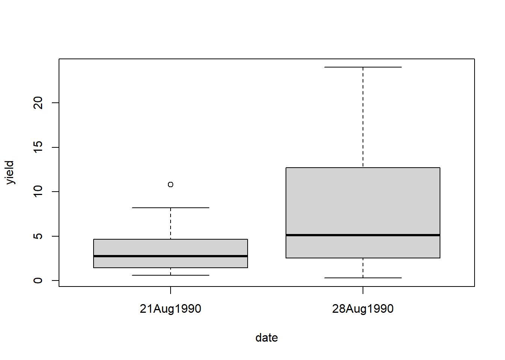
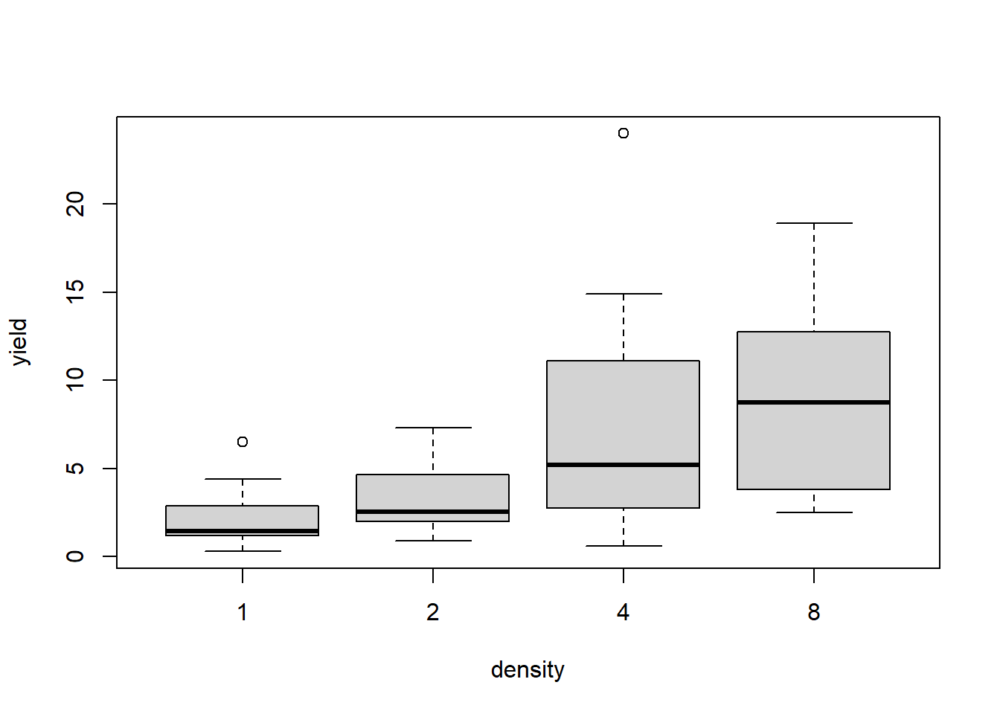

packages & data
pacman::p_load(dplyr, tibble, # packages for data handling
nlme, glmmTMB) # packages for mixed models
dat <- agridat::mcconway.turnip %>%
as_tibble() %>%
mutate(densf = as.factor(density))This is a randomized complete block design (4 blocks) with three treatment factors: genotype, date and density, leading to 16 treatment combinations (2 genotypes, 2 planting dates, 4 densities) (Piepho, 2009). It can be argued that heterogeneous error variances (i.e. heteroscedasticity) for two of the treatments should be considered:
boxplot(yield ~ date, data=dat)
boxplot(yield ~ density, data=dat)
| Model | Block | Genotype | Density | Date |
|---|---|---|---|---|
| mod1 | Identity | Identity | Identity | Identity |
| mod2 | Identity | Identity | Identity | Diagonal |
| mod3 | Identity | Identity | Diagonal | Identity |
| mod4 | Identity | Identity | Diagonal | Diagonal |
To accomplish this, we need to use the variance function varIdent() in the weights= statement, which is used to allow different variances according to thelevels of a classification factor. This variance structures is sometimes also referred to as diagonal. In model number 4 we are allowing for heterogeneous error variances for both dates and densities, which is done by combining two variance functions via varComb():
mod1.nlme <- nlme::lme(fixed = yield ~ gen * date * densf,
random = ~ 1|block,
weights = NULL, # default, i.e. homoscedastic errors
data = dat)
mod2.nlme <- mod1.nlme %>%
update(weights = varIdent(form=~1|densf)) # one error variance per density
mod3.nlme <- mod1.nlme %>%
update(weights = varIdent(form=~1|date)) # one error variance per date
mod4.nlme <- mod1.nlme %>%
update(weights = varComb(varIdent(form=~1|densf), # one error variance per
varIdent(form=~1|date))) # density-date combinationAs far as we know, it is quite cumbersome to extract the variance component estimates from nlme/gls objects (in a table format we are used to), even with helper packages such as broom.mixed. Beneath is the the most elegant approach we have so far when trying to get similarly formatted output for all 4 models. The general approach is to first get a table with a column for
varStruct andsigma.By multiplying the latter two, we receive the respective standard error estimate, which needs to be squared in order to obtain the respective variance component estimate.
mod1.nlme.VC <- tibble(grp="all", varStruct=1) %>%
mutate(sigma = mod1.nlme$sigma) %>%
mutate(StandardError = sigma*varStruct) %>%
mutate(Variance = StandardError^2)| grp | varStruct | sigma | StandardError | Variance |
|---|---|---|---|---|
| all | 1 | 3.097 | 3.097 | 9.591 |
mod2.nlme.VC <- mod2.nlme$modelStruct$varStruct %>%
coef(unconstrained=FALSE, allCoef=TRUE) %>%
enframe(name="grp", value="varStruct") %>%
mutate(sigma = mod2.nlme$sigma) %>%
mutate(StandardError = sigma*varStruct) %>%
mutate(Variance = StandardError^2)| grp | varStruct | sigma | StandardError | Variance |
|---|---|---|---|---|
| 1 | 1.000 | 1.501 | 1.501 | 2.252 |
| 2 | 1.276 | 1.501 | 1.916 | 3.670 |
| 4 | 3.334 | 1.501 | 5.004 | 25.037 |
| 8 | 2.434 | 1.501 | 3.652 | 13.339 |
mod3.nlme.VC <- mod3.nlme$modelStruct$varStruct %>%
coef(unconstrained=FALSE, allCoef=TRUE) %>%
enframe(name="grp", value="varStruct") %>%
mutate(sigma = mod3.nlme$sigma) %>%
mutate(StandardError = sigma*varStruct) %>%
mutate(Variance = StandardError^2)| grp | varStruct | sigma | StandardError | Variance |
|---|---|---|---|---|
| 21Aug1990 | 1.000 | 2.075 | 2.075 | 4.306 |
| 28Aug1990 | 1.898 | 2.075 | 3.938 | 15.505 |
mod4.nlme.varStruct.A <- mod4.nlme$modelStruct$varStruct$A %>%
coef(unconstrained=FALSE, allCoef=TRUE) %>%
enframe(name="grpA", value="varStructA")
mod4.nlme.varStruct.B <- mod4.nlme$modelStruct$varStruct$B %>%
coef(unconstrained=FALSE, allCoef=TRUE) %>%
enframe(name="grpB", value="varStructB")
mod4.nlme.VC <- expand.grid(mod4.nlme.varStruct.A$grpA,
mod4.nlme.varStruct.B$grpB,
stringsAsFactors=FALSE) %>%
rename(grpA=Var1, grpB=Var2) %>%
left_join(x=., y=mod4.nlme.varStruct.A, by="grpA") %>%
left_join(x=., y=mod4.nlme.varStruct.B, by="grpB") %>%
mutate(sigma = mod4.nlme$sigma) %>%
mutate(StandardError = sigma*varStructA*varStructB) %>%
mutate(Variance = StandardError^2)| grpA | grpB | varStructA | varStructB | sigma | StandardError | Variance |
|---|---|---|---|---|---|---|
| 1 | 21Aug1990 | 1.000 | 1.000 | 1.015 | 1.015 | 1.030 |
| 2 | 21Aug1990 | 1.482 | 1.000 | 1.015 | 1.503 | 2.260 |
| 4 | 21Aug1990 | 3.237 | 1.000 | 1.015 | 3.285 | 10.790 |
| 8 | 21Aug1990 | 2.772 | 1.000 | 1.015 | 2.813 | 7.910 |
| 1 | 28Aug1990 | 1.000 | 1.747 | 1.015 | 1.773 | 3.143 |
| 2 | 28Aug1990 | 1.482 | 1.747 | 1.015 | 2.627 | 6.900 |
| 4 | 28Aug1990 | 3.237 | 1.747 | 1.015 | 5.740 | 32.945 |
| 8 | 28Aug1990 | 2.772 | 1.747 | 1.015 | 4.914 | 24.151 |
As is standard procedure, we can do a model selection based on goodness-of-fit statistics such as the AIC. In order to have a direct comparison to Table 1 in (Piepho, 2009), we also calculated the deviance (i.e. -2*loglikelihood) for each model. The code is shown for mod1:
mod1.nlme %>% AIC # AIC ## [1] 308.1365-2 * logLik(mod1.nlme) %>% # Deviance
as.double ## [1] 272.1365| Model | AIC | Deviance |
|---|---|---|
| mod1 | 308.1365 | 272.1365 |
| mod2 | 298.3167 | 256.3167 |
| mod3 | 301.9271 | 263.9271 |
| mod4 | 294.2643 | 250.2643 |